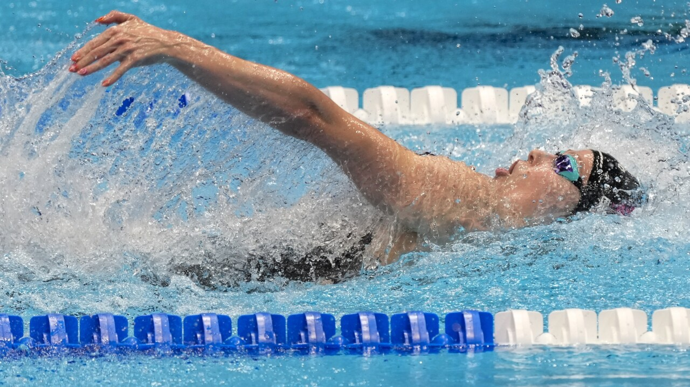
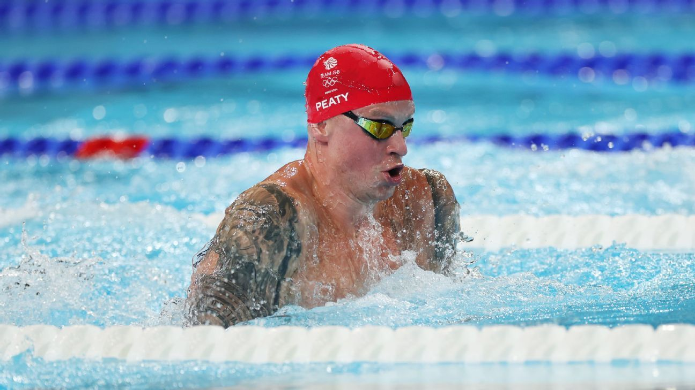

Your Ultimate Guide to Strokes, Techniques, and Training
Welcome to Competitive Swimming
Welcome to the ultimate resource for competitive swimmers, coaches, and fans of the sport! Whether you are a beginner learning the ropes, a seasoned athlete looking to shave tenths of a second
off your personal best, or someone who simply loves the thrill of the race, you have found your community.
On this website, we break down the core pillars of competitive swimming. Explore our dedicated pages for each of the four strokes: Butterfly, Backstroke,
Breaststroke, and Freestyle. Inside, you will find information on proper mechanics, essential training drills, and tips to help you optimize your
efficiency in the pool.
Dive in, explore the techniques, and let's work together to unlock your full potential in the fast lane!
Want a feel for how competitive swimming is? Play our small swimming clicker game!
Competitive swimming is a universally celebrated sport that tests the limits of human speed and endurance in the water. From local summer leagues to the grand stage of the Olympic Games,
swimming is governed globally by World Aquatics (formerly known as FINA), which establishes the official rules, dimensions for pools, and regulations for equipment and swimwear.
Short Course:
Typically swum in a 25-yard pool (common in American collegiate racing) or a 25-meter pool (common internationally during the winter season). These races emphasize explosive
turns and powerful underwater pullouts.
Long Course:
Swum in a 50-meter pool, which is the official Olympic standard. Long course racing is the ultimate test of sustained pacing and pure aerobic capacity, as there are half as
many walls to push off from.
Athletes compete both individually and as part of a relay. Individual events range from the explosive 50-meter sprints to the grueling 1500-meter distance race.
Relays consist of four swimmers taking turns to complete one race.
Training & Discipline
Behind every fast race in the pool are hundreds of hours of silent, unseen dedication. Competitive swimming is widely recognized as one of the most grueling sports in existence,
demanding a level of discipline that carries over into every aspect of an athlete's life.
In the Pool (The Yardage):
Swimmers routinely log thousands of meters per week. Training consists of aerobic base-building, high-intensity anaerobic sprints, and technical pace work. It is not uncommon
for competitive athletes to practice twice a day, often waking up before dawn to get their yards in before school or work.
Dryland & Weight Training:
Speed in the water requires power on land. Swimmers engage in "dryland" training, which includes core stabilization exercises, flexibility routines, yoga, and weightlifting.
This builds the explosive power needed for starts and turns while strengthening the shoulder and back muscles to prevent injury.
The Mental Edge:
Swimming is as much a mental game as a physical one. Staring at a black line on the bottom of the pool for hours requires immense focus and mental fortitude. Swimmers must
cultivate extreme resilience to push through lactic acid buildup, manage racing anxiety, and maintain perfect technique even when their bodies are screaming for oxygen.
Anatomy of a Swimmer
Click a stroke to see which muscle groups are primary movers
Deltoids & Shoulders
Crucial for recovery phase and clean entry.
Latissimus Dorsi (Back)
The main engine driving the underwater pull.
Core & Abs
Maintains streamline position and body rotation.
Quads & Glutes
Powers the continuous kick and wall push-offs.
Butterfly
The Butterfly is the most physically demanding and visually striking stroke in competitive swimming. Developed in the 1930s as a variation of the breaststroke, it became its own official stroke in 1952.
Technique & Mechanics
The butterfly stroke relies entirely on fluid momentum, core strength, and precise timing. To swim it efficiently without burning out, you must master how your body wave, kick, and arm pull work together.
The Body Wave (Undulation):
The butterfly does not start in the arms or legs—it starts in your core. Your body should move in a continuous, fluid wave-like motion that originates from your chest and drives down through your hips. When your chest presses down into the water, your hips should rise, and vice versa. Keeping your hips high near the surface is crucial for reducing drag.
The Two-Kick Rhythm:
You must execute exactly two dolphin kicks for every one arm stroke.
The Arm Pull & High-Elbow Catch:
Your hands should enter the water shoulder-width apart, thumb-first. Once in the water, sweep your hands outward and downward into a "high-elbow" position (the catch) to grip the water. Pull straight back beneath your body in an hourglass shape, pushing the water dynamically toward your feet.
Common Drills
Mastering the butterfly requires breaking the stroke down into manageable pieces to focus on timing, rhythm, and pull mechanics. Here are three of the most effective drills used by competitive swimmers:
Single-Arm Butterfly:
Keep one arm extended straight out in front of you (or at your side) while executing the normal butterfly pulling motion with the other arm. Breathe to the side,
just like in freestyle. This drill allows you to focus on the precision of your hand entry, the high-elbow catch, and synchronizing your two dolphin kicks per stroke without getting
exhausted.
Body Dolphin (with or without fins):
Streamline your arms tightly past your ears and focus entirely on the undulating movement of your hips and core. The movement should originate from
your chest, not your knees. This builds the foundational core strength and rhythm needed to keep your hips high in the water during the full stroke.
Backstroke
The Backstroke holds a distinctive place in competitive swimming as the only discipline swum entirely on the back. While backstroke allows for unrestricted breathing since your face stays out
of the water, it requires precise stroke counting and intense spatial awareness to navigate safely without being able to see where you are going.

Technique & Mechanics
Backstroke efficiency relies on a perfectly flat body line, continuous propulsion, and rhythmic shoulder rotation. Because you are facing upward, maintaining control over your body
position is key to preventing your hips from sinking.
Body Position & Head Alignment:
Keep your head completely still with your ears submerged to prevent your hips from sinking and creating drag.
The Continuous Flutter Kick:
Maintain a fast, relentless, and compact kick driven from the hips with pointed toes to provide constant propulsion.
Shoulder Rotation:
Roll your body smoothly from side to side along your spine to get a deeper arm reach and engage your larger back muscles.
The Arm Cycle:
Enter the water pinky-first and exit thumb-first, bending your elbow to 90 degrees underwater to efficiently push the water toward your feet.
Starts & Turns
Because swimmers cannot dive from the blocks or see the wall during the approach, the starts and turns in backstroke require specific, highly technical maneuvers.
The Backstroke Start:
Swimmers start in the water facing the wall, holding onto the starting block grips. At the starter's signal, swimmers explode backward out of the water, arching their backs to clear the
surface before entering through a single point. Many modern pools utilize a "backstroke ledge" to prevent the feet from slipping on the touchpads.
The Underwater Dolphin Kick:
After the start and each turn, swimmers remain on their backs to execute fast, powerful underwater dolphin kicks. Underwater dolphin kicks are limited by rule to a maximum of 15 meters before
the swimmer's head must break the surface.
The Flip Turn:
To turn, backstrokers use the overhead flags (placed 5 meters or yards from the wall) to count their strokes. At the correct moment, the swimmer flips over onto their stomach, executes a single
freestyle arm pull, and immediately goes into a standard forward flip turn, to then push off the wall on their back to begin their underwater dolphin kicks.
Breaststroke
Breaststroke is the oldest of all competitive swimming strokes and stands out as the most unique discipline in the pool. Unlike the other three strokes, which rely primarily on the arms for speed,
breaststroke derives the vast majority of its power and propulsion from the legs.

Technique & Mechanics
Breaststroke efficiency relies on perfect timing, a powerful kick, and maintaining a hydrodynamic body line to reduce the immense water resistance created during the recovery phase.
The Arm Stroke (The Pull):
The pull is short and stays entirely in front of your shoulders. Start with your arms extended forward, sweep your hands outward, and then press downward and inward with your forearms.
This downward pressure lifts your head and chest out of the water to take a breath. Immediately shoot your hands rapidly forward into a tight streamline.
The Whip Kick:
The breaststroke kick provides the main forward momentum. Bring your heels up toward your glutes by flexing at your knees and hips. Turn your feet outward so your arches face backward,
then sweep your legs out and violently snap them back together in a circular "whip" motion.
The Timing Sequence:
The foundational rhythm is pull, breathe, kick, glide. Your legs must recover forward while your arms are pulling, and your legs must snap shut just as your arms reach full extension.
The Glide Phase:
Because breaststroke creates a lot of resistance, you must capitalize on your momentum. Hold a dead-straight streamline position for a brief moment after the kick snaps shut to maximize
your distance per stroke before starting the next pull.
The Underwater Pullout
The underwater pullout is a highly technical, single sequence allowed exclusively after the start of the race and after each turn. It allows the swimmer to travel at maximum velocity
beneath the surface before breaking into the regular stroke.
The Launch (The Streamline):
After diving off the block or pushing off the wall, hold a tight, motionless streamline position to ride out the initial explosive speed.
The Arm Pull-Down:
While completely submerged, perform one massive arm stroke that pulls all the way down past your hips, bringing your arms flat against your thighs.
The Dolphin Kick:
A single dolphin kick is permitted during or immediately after the initial arm pull-down to add extra speed. The timing must be precise to maintain momentum.
The Recovery & Breaststroke Kick:
Bring your hands back up along the centerline of your chest to return them to the forward position, while simultaneously bringing your legs up to execute one full breaststroke whip kick.
The Breakout:
As the kick drives you forward, your head must break the surface of the water before your hands turn inward at the widest part of the second arm stroke.
Freestyle (Front Crawl)
Freestyle—often referred to in competition as the front crawl—is the fastest, most efficient, and most popular of all the competitive swimming strokes. In a freestyle event, the rules technically
allow swimmers to use any stroke they choose, but because the front crawl maximizes hydrodynamics and continuous propulsion, it has become synonymous with "freestyle."
Technique & Mechanics
Freestyle efficiency is all about maximizing forward propulsion while keeping your body streamlined to minimize water resistance.
The High-Elbow Catch:
Enter fingertips-first and bend your elbow early, using your entire hand and forearm as a paddle to press the water straight backward.
Bilateral Breathing:
Rotate your head to alternating sides with your body roll, keeping one goggle lens submerged to avoid lifting your head and dropping your hips.
Body Rotation:
Roll your torso and hips smoothly from side to side along your spine to enable a cleaner arm recovery and engage your powerful back muscles.
The Flutter Kick:
Drive a compact, continuous kick directly from your hips with flexible ankles to provide steady stabilization and keep your lower body high.
Distance vs. Sprinting
While the basic mechanics of freestyle remain the same, the strategy, pacing, and kicking dynamics change drastically depending on the length of the race.
Sprinting (50m to 100m):
Sprinting is an all-out explosion of power. Swimmers employ a rapid, heavy 6-beat kick (six kicks per arm cycle) to keep their hips riding exceptionally high on top of the water.
The stroke rate is incredibly high, breathing is kept to an absolute minimum to reduce drag, and the arm recovery is often flatter and more aggressive.
Distance Swimming (400m to 1500m):
Distance racing is a calculated game of efficiency and oxygen management. Swimmers typically switch to a relaxed 2-beat or 4-beat kick to conserve leg muscle energy for the later laps.
The arm stroke emphasizes a longer, patient glide at the front of each stroke to maximize distance per pull, and breathing becomes frequent and highly rhythmic (usually every two strokes)
to fuel the muscles with continuous oxygen.